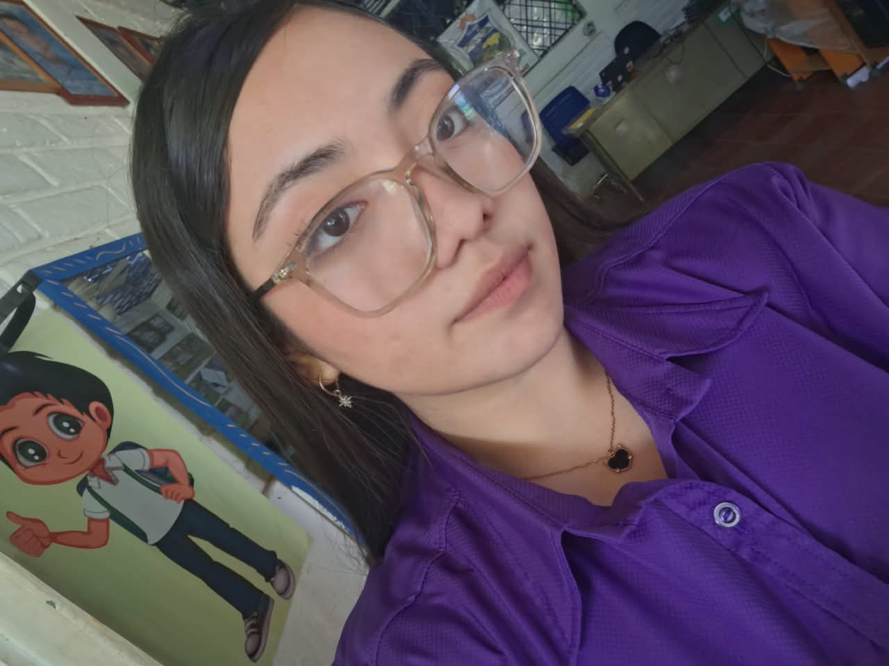

Módulo 1
Presupuesto personal
Diseño de un presupuesto con ingresos, gastos y ahorro, presentado en tablas comparativas.

Portafolio académico · Finanzas y Economía
Karla Alexandra Molina del Cid
Una mirada al presupuesto, el emprendimiento, la gestión de proyectos y la economía digital, reunida en un espacio de aprendizaje personal.
01 Presentación
Este portafolio digital tiene como finalidad presentar los conocimientos y aprendizajes adquiridos durante la asignatura de Finanzas y Economía. En él se reúnen actividades relacionadas con la planificación financiera, el emprendimiento, la gestión de proyectos y el impacto económico del Bitcoin. A través de estos temas, se busca comprender la importancia de administrar los recursos de manera responsable, organizar las ideas y planificar las actividades necesarias para alcanzar diferentes objetivos. También se presentan reflexiones sobre habilidades como la organización, la perseverancia, la responsabilidad, la proactividad y la ética. Este portafolio permite reunir los contenidos de la asignatura en un solo espacio y mostrar cómo pueden aplicarse los conocimientos económicos en la vida cotidiana, en proyectos académicos y en futuros emprendimientos.
Karla Alexandra Molina Del Cid
Segundo año de bachillerato · Sección A
02 Proyectos
Tres trabajos que reúnen lo aprendido en la asignatura y muestran cómo aplicar las finanzas en situaciones concretas.
Módulo 1
Diseño de un presupuesto con ingresos, gastos y ahorro, presentado en tablas comparativas.
Módulo 2
Propuesta de negocio organizada con producto, público objetivo y estrategia de comunicación.
Módulo 3
Organización de tareas, tiempos y recursos para avanzar con claridad hacia una meta.
Un portafolio para aprender haciendo. Los ejemplos, cálculos y propuestas de este sitio tienen una finalidad académica y no representan datos financieros ni comerciales reales.
Módulo 01 · Finanzas personales
Organiza tus recursos, planifica tus metas. El presupuesto convierte los ingresos en decisiones: permite saber qué entra, qué sale y qué parte del dinero se reserva para lo que realmente importa.
Contenido Técnico
01 Concepto
Un presupuesto es una herramienta que permite organizar los ingresos y los gastos durante un período determinado. Sirve para conocer cuánto dinero se recibe, cómo se utiliza y cuánto se puede reservar para el ahorro. También ayuda a establecer prioridades, controlar los gastos y prepararse para posibles imprevistos.
Organizar antes de gastar
02 Personal
Así distribuyo mis ingresos mensuales entre las necesidades, el entretenimiento y el ahorro.
Presupuesto mensual: los montos se ajustan según los ingresos y gastos de cada mes.
Entradas
| Concepto | Cantidad |
|---|---|
| Dinero recibido para gastos personales | $70 |
| Ingreso adicional | $10 |
| Total de ingresos | $80 |
Salidas y reserva
| Concepto | Cantidad |
|---|---|
| Transporte | $14 |
| Alimentación | $18 |
| Materiales escolares | $10 |
| Higiene personal | $8 |
| Entretenimiento | $10 |
| Ahorro | $20 |
| Total de gastos y ahorro | $80 |
03 Herramientas
Excel y Google Sheets permiten organizar datos financieros, realizar operaciones matemáticas y actualizar cálculos automáticamente.
Hoja de cálculo
Si en B2 y B3 escribes dos cantidades, la fórmula =SUMA(B2:B3) suma las cantidades contenidas en esas celdas. Al cambiar un dato, el resultado se actualiza automáticamente.
=SUMA(B2:B3)
04 Beneficios
Reflexión Actitudinal
Aprendí que administrar el dinero requiere responsabilidad y organización. Un presupuesto permite identificar los gastos necesarios, evitar compras innecesarias y reservar una parte de los ingresos para el ahorro. También comprendí que debo revisar los datos y comprobar los cálculos para tomar decisiones más informadas.
05 Conexión
Al iniciar un emprendimiento, el presupuesto ayuda a calcular el costo de los materiales, la elaboración de los productos, los empaques y la promoción. En el siguiente módulo, esta idea se conecta con Oda & Cera, una propuesta académica de velas aromáticas.
Módulo 02 · Creatividad y negocio
De una idea a una oportunidad de negocio. Emprender es transformar una necesidad observada en una propuesta con propósito, producto, público y una forma responsable de administrar los recursos.
Propuesta académica · sin ventas reales
Contenido Técnico
01 Concepto
Un emprendimiento es una iniciativa que busca ofrecer un producto o servicio para satisfacer una necesidad o resolver un problema. Para desarrollarlo se necesita planificación, creatividad, conocimiento del público objetivo y una administración adecuada de los recursos.
Una idea que se organiza
02 Idea de negocio
Una propuesta de velas aromáticas pensada para acompañar la decoración del hogar y convertirse en una opción de regalo. Este proyecto se utiliza como ejemplo para desarrollar la actividad de emprendimiento.
Nota académica: es una propuesta de negocio para fines académicos. No se inventan ventas, clientes ni resultados comerciales.
Nombre
Identidad sencilla y evocadora para una marca de velas aromáticas.
Tipo de negocio
Producción y comercialización propuesta de velas aromáticas.
Productos propuestos
Velas con aromas de eucalipto, lavanda y coco.
Público objetivo
Personas interesadas en la decoración del hogar, los aromas agradables y los regalos originales.
Propuesta de valor
Ofrecer velas aromáticas con una presentación elegante, aromas agradables y un diseño sencillo.
Objetivo general
Desarrollar una propuesta de emprendimiento organizada, con productos atractivos y una planificación adecuada.
Para producir
03 Concepto visual
Representaciones ilustrativas de los productos propuestos. No son fotografías de productos reales ni etiquetas comerciales.
Concepto de producto
Una nota fresca y herbal, asociada a la limpieza y la calma.
Aroma propuesto
Concepto de producto
Un aroma floral y sereno, pensado para crear una atmósfera tranquila.
Aroma propuesto
Concepto de producto
Una nota cálida y dulce, ideal para espacios acogedores.
Aroma propuesto
04 Estrategia
Cinco acciones propuestas para dar a conocer el emprendimiento y construir confianza con los clientes.
Nota académica: estas son estrategias propuestas. No representan resultados de campañas reales.
Publicar fotografías de los productos y explicar sus características.
Utilizar un catálogo digital y responder consultas.
Proponer paquetes de regalo y descuentos ocasionales.
Utilizar empaques atractivos y apropiados para el producto.
Responder con respeto, cumplir los pedidos y escuchar las opiniones de los compradores.
05 Presentación
Oda & Cera · Elevator Pitch · Duración aproximada: 1 a 2 minutos
“Hola, hoy quiero presentarles Oda & Cera, una propuesta de emprendimiento dedicada a la elaboración y venta de velas aromáticas con aromas de eucalipto, lavanda y coco.”
AperturaHola, mi nombre es Karla Alexandra Molina Del Cid. Hoy les presento Oda & Cera, una propuesta de emprendimiento dedicada a la elaboración y venta de velas aromáticas. La idea surgió al pensar en crear un producto sencillo, elegante y práctico que pueda acompañar la decoración del hogar o convertirse en un regalo original.
Para este proyecto hemos propuesto tres aromas: eucalipto, con una nota fresca y herbal; lavanda, con un aroma floral y sereno; y coco, con una nota cálida y dulce. Todos ellos buscan crear una atmósfera tranquila y acogedora para cualquier espacio.
Lo que hace diferente a Oda & Cera es ofrecer velas aromáticas con una presentación elegante, aromas agradables y un diseño sencillo. No se trata solo de iluminar un espacio, sino de transmitir calma, calidez y detalle en cada producto.
Nuestro público objetivo son las personas interesadas en la decoración del hogar y en regalar detalles originales. Para dar a conocer el emprendimiento, proponemos utilizar redes sociales, WhatsApp con un catálogo digital, promociones, empaques atractivos y una buena atención al cliente.
Con Oda & Cera, buscamos demostrar que, con organización, creatividad y responsabilidad, una idea pequeña puede convertirse en una propuesta viable. Gracias por su atención. Estoy abierta a sus preguntas.
Reflexión Actitudinal
Este módulo me permitió comprender que emprender no consiste solamente en tener una idea, sino también en organizar los recursos, investigar el mercado y establecer estrategias para llegar a los clientes. Aprendí que la planificación y el autocontrol ayudan a tomar decisiones responsables y a utilizar adecuadamente el dinero disponible.
Módulo 03 · Productividad
Convierte tus planes en acciones. Gestionar un proyecto es darle orden al esfuerzo: distribuir tareas, prever tiempos, revisar avances y sostener el compromiso con el objetivo.
Contenido Técnico
01 Concepto
La gestión de proyectos consiste en planificar, organizar y supervisar las actividades y los recursos necesarios para alcanzar un objetivo. Ayuda a distribuir las tareas, establecer fechas y comprobar el avance del trabajo.
Del plan a la acción
02 Comparación
Ningún método es siempre mejor. La elección depende de las necesidades, la duración y las características del proyecto.
| Aspecto | Método tradicional | Método ágil |
|---|---|---|
| Planificación | Se organiza gran parte del proyecto desde el inicio. | Se planifica y ajusta el trabajo por etapas. |
| Cambios | Se controlan mediante procedimientos establecidos. | Se incorporan ajustes con mayor frecuencia. |
| Seguimiento | Se revisa el cumplimiento del plan y las fechas. | Se revisa continuamente el progreso. |
| Uso | Proyectos con requisitos definidos. | Proyectos que necesitan adaptación frecuente. |
03 Conexiones
Los contenidos de la asignatura se conectan: el presupuesto sostiene la idea, el emprendimiento le da forma y la gestión la pone en marcha.
Calcular los recursos disponibles.
BaseDefinir el producto, el público y las estrategias.
PropuestaOrganizar las tareas y comprobar el avance.
Acción04 Práctica
Planificación de las actividades principales para desarrollar la propuesta.
Nota académica: este cronograma es un ejemplo de planificación y no una constancia de que las actividades se hayan realizado.
Semana 1
Resultado esperado: Presupuesto inicial.
Semana 2
Resultado esperado: Propuesta del producto.
Semana 3
Resultado esperado: Plan de negocio organizado.
05 Habilidades
Distribuir las tareas y establecer prioridades.
Continuar trabajando ante las dificultades.
Identificar problemas y buscar soluciones.
Actuar con honestidad, respeto y responsabilidad.
Colaborar para alcanzar objetivos comunes.
Reflexión Actitudinal
Comprendí que la gestión de proyectos ayuda a aprovechar mejor el tiempo y los recursos. Un cronograma permite identificar las actividades que deben realizarse y cuándo. También aprendí que la perseverancia, la organización y el liderazgo ético contribuyen a alcanzar los objetivos de manera responsable.
Módulo 04 · Economía digital
Tecnología, dinero y transformación económica. Bitcoin abre preguntas sobre descentralización, confianza digital y riesgo. Comprenderlo exige mirar tanto sus posibilidades como sus límites.
Contenido Técnico
01 Concepto
Bitcoin es un activo digital que funciona mediante una red descentralizada. Sus transacciones se registran mediante una tecnología conocida como cadena de bloques o blockchain. Su precio puede experimentar cambios importantes y su uso requiere comprender los riesgos tecnológicos y financieros.
Una red sin un único centro
No hay una sola entidad que controle todas las operaciones. Muchos participantes de la red mantienen y verifican información, lo que reduce la dependencia de un único intermediario.
Las transacciones se agrupan en bloques que se enlazan entre sí. Cada bloque contiene información que ayuda a verificar su relación con el anterior.
Las operaciones quedan registradas en una cadena compartida. La red utiliza mecanismos de verificación para procurar que el historial no se altere fácilmente.
Representación ilustrativa. No contiene datos de transacciones reales.
02 Impacto
Bitcoin ha generado debates sobre las formas de pago, la inversión y las transferencias digitales. Una mirada equilibrada considera ambos lados.
Posibles
Posibles
A nivel internacional, la regulación varía según cada país. Antes de usar o invertir en criptoactivos, es necesario consultar las normas vigentes y fuentes confiables.
03 Contexto nacional
Un caso relevante para comprender cómo la tecnología digital se relaciona con las decisiones públicas y el marco legal.
Contexto legal
La normativa puede cambiar. Las afirmaciones legales de esta sección se presentan con base en fuentes oficiales y deben verificarse antes de tomar decisiones.
El Salvador adoptó Bitcoin como moneda de curso legal en 2021, junto con el dólar estadounidense. La medida generó atención internacional y abrió un debate sobre sus efectos económicos y regulatorios.
En 2025 se reformó el marco legal correspondiente. Entre los cambios se incluyó que la aceptación de Bitcoin por parte del sector privado sea voluntaria y que los impuestos se paguen en dólares estadounidenses.
Las fuentes oficiales se reúnen en la pestaña Fuentes.
04 Seguridad
La forma en que se guardan las claves privadas influye en el acceso y en la exposición a ciertos riesgos.
Conectada
Está conectada a internet y facilita el acceso, pero puede estar más expuesta a determinados riesgos digitales.
Fuera de línea
Mantiene las claves privadas fuera de línea y puede reducir ciertos riesgos informáticos, aunque también requiere cuidado para evitar la pérdida de acceso.
Buenas prácticas
05 Indicadores
Estos conceptos ayudan a interpretar la economía digital sin confundir sus variables.
Nota académica: no se incluyen cifras actuales ni estadísticas. Cualquier dato numérico debería provenir de una fuente verificable y mostrar su fecha.
Valor de mercado de Bitcoin.
Relación entre la cantidad disponible y el interés de compra.
Magnitud de los cambios de precio.
Grado de uso por parte de personas, empresas e instituciones.
Aumento general de los precios de bienes y servicios; no es lo mismo que la variación del precio de Bitcoin.
Reflexión Actitudinal
Aprendí que Bitcoin es una innovación tecnológica que puede influir en las finanzas, pero también implica riesgos. Antes de utilizarlo o invertir, es necesario investigar, conocer las normas vigentes y proteger la información personal. Considero que la prudencia, la ética y la responsabilidad son fundamentales para tomar decisiones económicas informadas.
Cierre del portafolio
Una pausa para reconocer lo aprendido, identificar lo que aún se puede fortalecer y proyectar cómo aplicar estos conocimientos en la vida diaria.
01 Criterios
Estos son los criterios que permiten reconocer el avance del proceso. No hay respuestas correctas ni calificaciones automáticas.
02 Evaluación Actitudinal Integrada
Preguntas abiertas para sintetizar la experiencia y proyectar los aprendizajes.
¿Qué aprendizaje considero más valioso de este portafolio?
¿Qué aspectos necesito seguir fortaleciendo?
¿Cómo puedo aplicar lo aprendido en mi vida diaria?
03 Síntesis del Aprendizaje
A lo largo de este portafolio se abordaron temas relacionados con el presupuesto, el emprendimiento, la gestión de proyectos y el uso de Bitcoin en El Salvador. Cada uno de estos contenidos permitió comprender que la educación financiera no consiste únicamente en administrar dinero, sino también en tomar decisiones informadas, organizar los recursos y actuar con responsabilidad.
El portafolio reúne los aprendizajes construidos durante el desarrollo de la asignatura y constituye una herramienta para continuar fortaleciendo hábitos financieros saludables.
Karla Alexandra Molina Del Cid
Archivo del proceso
Seis apartados que reúnen los trabajos de la asignatura y respaldan el proceso de aprendizaje.
01 Portafolio de trabajos
Organización de los trabajos que respaldan el proceso de aprendizaje.
Módulo 1
Registro de ingresos, gastos y ahorro elaborado durante la práctica.
Módulo 2
Documento con la idea de negocio, productos y estrategias.
Módulo 3
Planificación de tareas, tiempos y resultados esperados.
Módulo 4
Síntesis del funcionamiento, los riesgos y el contexto legal.
Presentación
Material de apoyo para presentar la propuesta de emprendimiento.
Cierre
Síntesis personal del proceso de aprendizaje.
Cada evidencia puede acompañarse con una imagen, un documento PDF o un archivo de texto.
Contacto
Para consultas relacionadas con este portafolio, los trabajos académicos o las evidencias de la asignatura, puedes comunicarte por correo electrónico.
Correo electrónico
Este es el medio principal para consultas sobre el contenido del portafolio. Los trabajos presentados tienen finalidad académica.
Información académica
Bibliografía
Referencias consultadas para complementar los contenidos del portafolio.
Referencias en formato APA
Consulta las fuentes para conocer el texto vigente y sus actualizaciones.